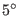

Next: Energy simulation Up: Methodology Previous: 3D surface reconstruction
This study relies on the TABULA building typology [40], which is a product of the EU projects TABULA and EPISCOPE. These projects analysed the European residential building stock with the purpose to define exemplary buildings with information on building envelopes, ventilation, heating and warm water systems. The building types are defined according to the period of construction and size class. The German residential building stock [38] distinguishes 12 periods of construction and four main size classes, as well as a few subclasses which are specific in their construction or to a region. The four size classes are single-family houses (SFH), terraced houses (TH), multi-family houses (MFH) and apartment blocks (AB). The values utilized from TABULA are the U-values of the building surfaces and the energy expenditure coefficients of the heat generators for space heating and hot water. These values are available for all building types and the three states of refurbishment: existing state, usual refurbishment and advanced refurbishment. However, only the existing state and usual refurbishment are considered in this study because no information on the distribution of advanced refurbishment is available. The usual refurbishment differs from the existing state in terms of improved U-values of building surfaces (between 4 and 92 percent) and improved energy expenditure coefficients of heat generators (between 5 and 21 percent).
The information on each building type is translated by the mean of OpenStudio [24], which is a graphical interface to EPlus, into a model template for building energy simulation. Every template is designed as a single thermal zone with separated heating and warm water systems. The thermal zone is naturally ventilated and heated by baseboard heater.
After defining the model templates, every building in the study area has to be classified. The year of construction and the number of floors are the main determinants. The distinction between single-family houses and terraced houses is more challenging. The distinguishable properties of a terraced house are shared edges with one or two other residential buildings and similarities in their building footprints. In fact, neighbouring terraced houses resemble each other in shape and appearance. Therefore, if a building with the size of single-family house shares walls with one or two other single-family houses and if the footprint of this house has a similar size and shape, then this building is considered a terraced house. Furthermore, the state of refurbishment can be assigned. However, the determination of whether an specific building was refurbished and to which extent is mostly not possible. To remedy this shortcoming, the progress of refurbishment [38] can be randomly assigned to the buildings. The same random assignment is used for designating buildings with conditioned cellar and roof based on their empirical distribution. If a building has a conditioned cellar, the thermal zone is extended by one floor. In the case of an unconditioned roof, the roof section is excluded from the thermal zone by inserting a ceiling. If the cellar or roof are partly conditioned, then different thermal zones are introduced with an assumed temperature set point of C to avoid frost.
The next step is the generation of EPlus input files, i.e., IDF, for every residential building. In order to automate this process, the Python library Eppy [54] merges the data of the building envelope, which contains the coordinates of every surface vertex, with the model template of the corresponding building type. Figure 3 also indicates the surface classes, which are floor, wall and roof. Surface classification is important because the different classes are exposed to distinct simulation conditions.
Maikel Issermann